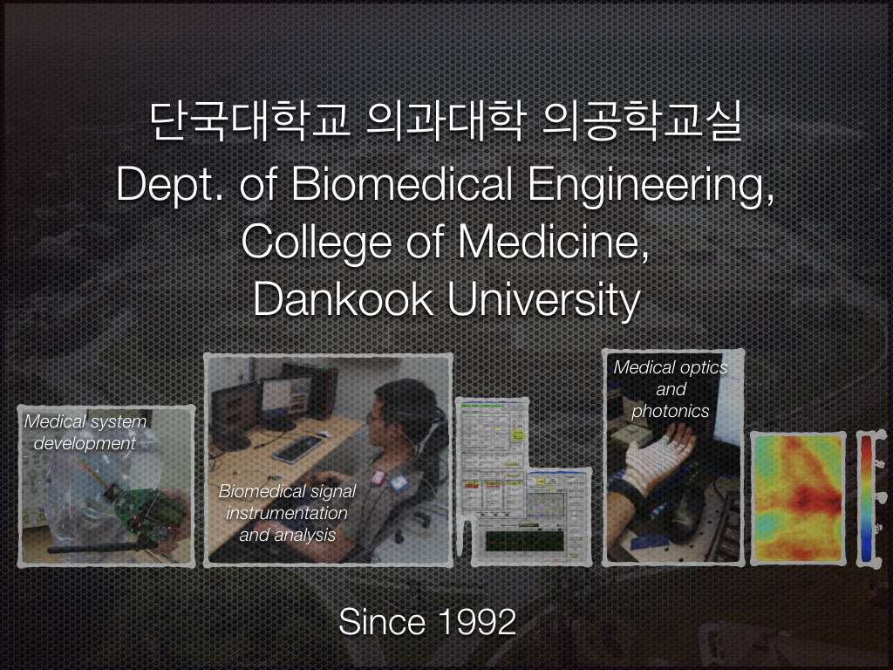

Welcome to Biomedical Signal Convergence
Lab!
College of Medicine, Dankook University, Cheoan, Republic of Korea

우리 연구실은 의료/의학적 이용 목적의 다양한 생체신호계측을 통해 획득한 생체신호들을 분석하는 방법을 연구하는 곳입니다. 의료기기를 포함하는 의용생체전자 시스템(biomedical electronic system)에 관한 연구를 해오고 있습니다. 현재까지의 주요 연구 내용 은 다양한 생체신호획득 센서 및 영상 장치 기반의 바이오 메디컬 시스템 개발에 관련된 것입니다. 단국대학교 의공학교실에 2008년 3월에 부임한 이후로 '인공중이를 위한 인공 이소골 모델 개발', '고효율 경피형 무선 전력 및 데이터 전달 장치 개발', ‘객관적 이명 검사 방법 연구 개발’, ‘줄기세포분화유도를 위한 전자기 자극 장치 개발’, ‘전기자극에 의한 근육의 tetanic force 측정 방법 개발’, ‘이광자 현미경 제어 및 영상 획득 시스템 SW 개발’을 진행한 바 있으며, 현재는 ‘이명 연구용 동물 놀람 반응 측정 장치 개발’, ‘뇌파 기반 객관적 이명 검사법 개발’, ‘뇌파 기반 객관적 색각이상 검사 시스템 개발’, ‘SFDI 기법 기반의 마이봄샘 광학적 특성 측정 시스템 연구 개발’, ‘SFDI/LSI/LLLT 통합 광진단치료시스템 (optical theranostic system, OTS) 연구 개발’, ‘전정기관 기능 이상 검사용 VsEP (vestibular stimulated evoked potential) 측정 시스템 연구 개발’, '조직 혈액관류 영상 기반 욕창 조기진단 및 치료예후 예측 기술 개발' 등 다양한 바이오메디컬 공학 시스템 연구를 진행하고 있습니다.